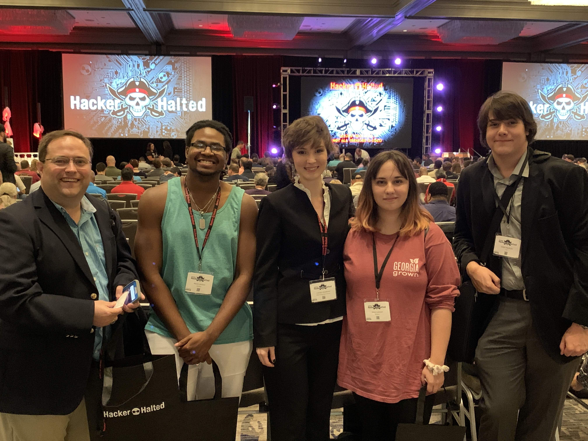

Gathering likeminded individuals into the common goals of service, mutual support, and fostering leadership for the purpose of growing as a community of IT professionals.

AITS (The Association of Information Technology Students) is a student organization within the Department of Information Technology at Middle Georgia State University. Our purpose is to provide an extension to the Information Technology department to guide and mentor students on their journey towards completing their IT degrees. Our group has been involved in sponsoring student events on multiple MGA campuses, working with other groups on campus to host student events, and attending major conferences outside of the university. We even assisted in the 2020 Cybersecurity Conference that was hosted by MGA. Our members represent all degree tracks within our department. If you are interested in becoming a part of our organization, please contact us! You may join us on our discord server and all students (regardless of major) with interests in technology are welcome to join.